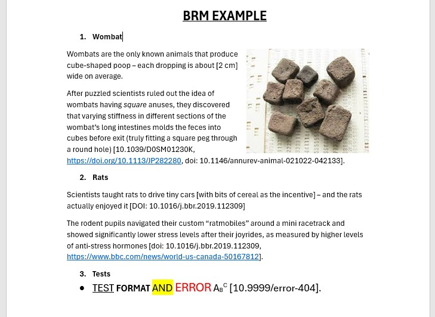
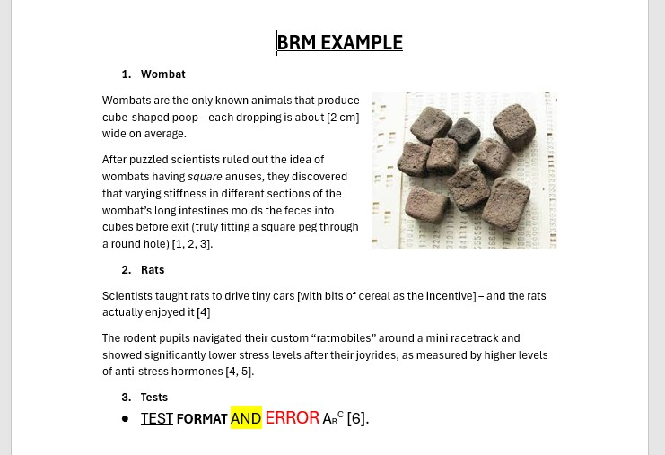

software · python

BRM
A desktop tool designed to take the headache out of formatting and numbering bibliographic references in Word documents.
A desktop tool designed to take the headache out of formatting and numbering bibliographic references in Word documents.
When I am deep into writing a paper, I like to keep the momentum going. Instead of stopping to format every source, I just drop the DOI link directly into square brackets like [https://doi.org/10.1234/xyz] and keep typing. It is a great way to stay focused, but it creates a massive chore for later.
The real pain starts at the end of the project. Manually going through a full paper to number every citation, checking for duplicates, and trying to get every comma right in APA style is boring and full of mistakes. I built BRM because I wanted a way to automate that entire process with a single click.
The workflow is simple: you drop your .docx file into the app and let it do the heavy lifting. BRM scans the entire document for any DOI or URL hidden inside square brackets. It replaces those links with sequential numbers based on when they first appear, and it is smart enough to reuse the same number if you cite the same source twice. Once the scan is done, it appends a full bibliography at the end of your document. Every reference is fetched and formatted in APA style using the DOI API. If a reference cannot be found automatically, the app flags it in red so you can quickly fix it yourself.
BRM is flexible with formats too. It handles full https://doi.org/ URLs, bare DOIs like 10.1234/xyz, or even links with the doi: prefix. It even manages regular web URLs by adding them to the list and flagging them for a final manual check.

